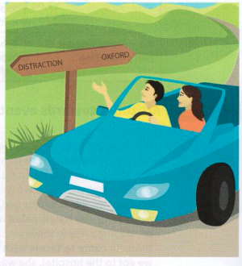

Exercises
14.1 Which idioms on the left-hand page have these keywords?
| keyword | idiom |
|---|---|
| 1 half | |
| 2 baby | |
| 3 desire | |
| 4 bandwagon | |
| 5 laugh |
14.2 Use the idioms from exercise 14.1 to rewrite the underlined parts of these sentences.
- The new documentary channel on TV is not as good as it should be.
- My brother goes to enormous efforts to do everything perfectly; he designed and built his own house, and designed most of the furniture too!
- He thinks everyone is afraid of him, but in fact everyone laughs at him in secret.
- Yes, I think we should change the system, but I think we should be careful to keep the good things about the old system.
- Five years ago, there were not many companies selling on the Internet, but now everyone has joined in because it's so successful.
14.3 Answer these questions.
-
During the discussion, Kelly played devil's advocate.
Did she agree or disagree with everyone else?
In what way? -
The buses that go from the airport to the city are a bit rough and ready. Are they nice to ride in?
Does the idiom mean they are usually ready to go when you arrive? - Matt was acting under false pretences when he worked as an electrician. What did Matt do which was wrong?
-
Camford University is not all it's cracked up to be.
Would you want to study there? Why? / Why not? -
Your friend has driven you to distraction.
Do you say 'Thanks for the lift'? Are you happy with him/her? Why? / Why not?

14.4 Complete each of these idioms. Use the clues in brackets.
- That new motorway project has the of a disaster for the environment. It will go through the middle of a wildlife area. (is likely to become)
- Zara a real of in class the other day. It was so embarrassing! (behaved in a way that made her look stupid)
- The Krona Hotel is a bit expensive . Couldn't we stay somewhere cheaper? (more than I want to pay)
- This old camera is a . The batteries run out after about ten photos. (useless, no good)
- I think Paris the over other European cities as a place for a holiday. (slightly better)
- The government has got a to for with regard to unemployment. (has caused a lot of problems)